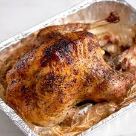

Turkey in the Bag
>
Your Favourite Turkey Recipe
Cooking turkey in a bag is easy with this recipe.
Your Thanksgiving turkey will be perfectly moist when done,
and you can make gravy out of the juice that forms in the bottom
of the bag. Plus, cleanup is a snap!
The cooking time will vary if your turkey is larger
or smaller than 12 pounds.
Cook your turkey in a bag for a tender,
juicy, and flavorful holiday dinner.
This method yields perfect results every time
and makes cleanup a breeze.
Why Cook Turkey In a Bag?
Cooking turkey in a bag keeps the bird
juicy by trapping in the moisture. It also speeds up the
cooking time by trapping in the heat.
Plus, you won't have to scrub the roasting pan
when you're done, just throw the bag out.
Ingredients
Here's what you'll need to make this top-rated turkey in a bag:
- Turkey: This recipe calls for a whole 12-pound turkey.
If your bird is larger or smaller,
you'll need to adjust your cooking time.
- Seasonings: The turkey is simply seasoned with
just salt and pepper,
which allows the natural flavors to shine.
- Flour: Two tablespoons of flour keep the bag from
bursting and help with browning.
- Vegetables: The turkey is roasted alongside onions and celery.
For an extra pop of color, add carrots.
- Turkey Bag: You should be able to find turkey-sized
oven bags at your local grocery store,
likely in the aluminum foil and plastic wrap aisle.
Steps to making Poridge
You'll find the full, step-by-step recipe below but here's a
brief overview of what you can expect when you roast this turkey in a bag:
- Prepare the Turkey: Remove and discard the giblets,
pat the turkey dry,
and season with salt and pepper
- Pack the Bag: Sprinkle the bottom of the bag with flour.
Place the turkey in the bag along with cut celery and onions.
Seal the bag, transfer to a roasting pan,
and use a fork to poke several holes in the bag.
- Roast the Turkey: Bake in a preheated oven until the
juices run clear. An instant-read thermometer
inserted into the thigh meat should read 180 degrees F.
Poridge
Spatchcocked-Butter-Roasted